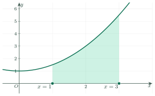

Definite IntegralsTích phân
Grade 12 · Topic: Antiderivatives and IntegralsLớp 12 · Chủ đề: Nguyên hàm và tích phân
1Lesson IntroductionGiới thiệu bài học
Learning goalsMục tiêu bài học
By the end of this lesson you can:
Sau bài học này, em có thể:
compute a definite integral with the Newton–Leibniz formula;
tính tích phân bằng công thức Newton – Leibniz;
use the properties (linearity, splitting the interval, swapping the limits);
dùng các tính chất (tuyến tính, tách cận, đổi cận);
integrate functions with absolute values by splitting the interval;
tính tích phân của hàm có dấu giá trị tuyệt đối bằng cách tách khoảng;
interpret an integral as an area, a distance or a total change.
hiểu tích phân là diện tích hình thang cong, quãng đường đi được hay tổng lượng biến thiên.
2Mathematical VocabularyTừ vựng Toán học
definite integral – the number \(\int_a^bf(x)\,dx=F(b)-F(a)\), where \(F\) is an antiderivative of \(f\).
tích phân – số \(\int_a^bf(x)\,dx=F(b)-F(a)\), trong đó \(F\) là một nguyên hàm của \(f\).
lower and upper limits – the numbers \(a\) and \(b\) in \(\int_a^b\).
cận dưới và cận trên – các số \(a\) và \(b\) trong \(\int_a^b\).
Newton–Leibniz formula – \(\int_a^bf(x)\,dx=F(x)\Big|_a^b=F(b)-F(a)\).
công thức Newton – Leibniz – \(\int_a^bf(x)\,dx=F(x)\Big|_a^b=F(b)-F(a)\).
region under a curve (curvilinear trapezoid) – the region bounded by \(y=f(x)\ge0\), the \(x\)-axis and the lines \(x=a\), \(x=b\); its area is \(\int_a^bf(x)\,dx\).
hình thang cong – hình giới hạn bởi đồ thị \(y=f(x)\ge0\), trục hoành và hai đường thẳng \(x=a\), \(x=b\); diện tích là \(\int_a^bf(x)\,dx\).
total change – \(\int_a^bF'(x)\,dx=F(b)-F(a)\): integrating a rate of change gives the total change.
tổng lượng biến thiên – \(\int_a^bF'(x)\,dx=F(b)-F(a)\): tích phân của tốc độ thay đổi cho tổng lượng thay đổi.
distance travelled – for \(v(t)\ge0\), \(\int_a^bv(t)\,dt\) is the distance travelled from \(t=a\) to \(t=b\).
quãng đường đi được – với \(v(t)\ge0\), \(\int_a^bv(t)\,dt\) là quãng đường đi được từ \(t=a\) đến \(t=b\).
3Useful English PhrasesCụm từ tiếng Anh thường gặp
Evaluate the definite integral.
Tính tích phân.
Split the integral at \(x=1\).
Tách tích phân tại \(x=1\).
Find the area of the region under the curve.
Tính diện tích hình thang cong.
How far does the car travel before it stops?
Ô tô đi thêm được bao xa thì dừng?
The integral of the rate gives the total change.
Tích phân của tốc độ cho tổng lượng thay đổi.
4Prerequisite ReviewÔn tập kiến thức nền
From Bài 11: \(\int x^\alpha dx=\dfrac{x^{\alpha+1}}{\alpha+1}+C\), \(\int\dfrac1xdx=\ln|x|+C\), \(\int\sin x\,dx=-\cos x+C\), \(\int\cos x\,dx=\sin x+C\), \(\int e^xdx=e^x+C\), \(\int a^xdx=\dfrac{a^x}{\ln a}+C\); if \(v(t)=s'(t)\), then \(s\) is an antiderivative of \(v\).
Từ Bài 11: \(\int x^\alpha dx=\dfrac{x^{\alpha+1}}{\alpha+1}+C\), \(\int\dfrac1xdx=\ln|x|+C\), \(\int\sin x\,dx=-\cos x+C\), \(\int\cos x\,dx=\sin x+C\), \(\int e^xdx=e^x+C\), \(\int a^xdx=\dfrac{a^x}{\ln a}+C\); nếu \(v(t)=s'(t)\) thì \(s\) là một nguyên hàm của \(v\).
5TheoryLý thuyết
5.1 DefinitionKhái niệm tích phân
Area under a curveDiện tích hình thang cong
Let \(f\) be continuous and non-negative on \([a;b]\), and \(F\) an antiderivative of \(f\). The area of the region bounded by \(y=f(x)\), the \(x\)-axis, \(x=a\), \(x=b\) is \(S=F(b)-F(a)\).
Cho \(f\) liên tục, không âm trên \([a;b]\) và \(F\) là một nguyên hàm của \(f\). Diện tích hình thang cong giới hạn bởi đồ thị \(y=f(x)\), trục hoành và hai đường thẳng \(x=a\), \(x=b\) là \(S=F(b)-F(a)\).

Definition (Newton–Leibniz)Định nghĩa (công thức Newton – Leibniz)
\(f\) continuous on an interval containing \(a\), \(b\); \(F\) any antiderivative (the constant \(C\) cancels).
\(f\) liên tục trên một khoảng chứa \(a\), \(b\); \(F\) là một nguyên hàm bất kì (hằng số \(C\) bị triệt tiêu).
Conventions: \(\int_a^af(x)\,dx=0\), \(\int_b^af(x)\,dx=-\int_a^bf(x)\,dx\). The variable name does not matter: \(\int_a^bf(x)\,dx=\int_a^bf(t)\,dt\).
Quy ước: \(\int_a^af(x)\,dx=0\), \(\int_b^af(x)\,dx=-\int_a^bf(x)\,dx\). Tích phân không phụ thuộc tên biến: \(\int_a^bf(x)\,dx=\int_a^bf(t)\,dt\).
Meaning: \(\int_a^bF'(x)\,dx=F(b)-F(a)\) is the total change of \(F\); \(\int_a^bv(t)\,dt\) is the distance travelled when \(v\ge0\).
Ý nghĩa: \(\int_a^bF'(x)\,dx=F(b)-F(a)\) là tổng lượng biến thiên của \(F\); \(\int_a^bv(t)\,dt\) là quãng đường đi được khi \(v\ge0\).
5.2 PropertiesTính chất của tích phân
For continuous \(f\), \(g\)Với \(f\), \(g\) liên tục
\(\int_a^bkf(x)\,dx=k\int_a^bf(x)\,dx\).
\(\int_a^bkf(x)\,dx=k\int_a^bf(x)\,dx\).
\(\int_a^b[f(x)\pm g(x)]\,dx=\int_a^bf(x)\,dx\pm\int_a^bg(x)\,dx\).
\(\int_a^b[f(x)\pm g(x)]\,dx=\int_a^bf(x)\,dx\pm\int_a^bg(x)\,dx\).
\(\int_a^bf(x)\,dx=\int_a^cf(x)\,dx+\int_c^bf(x)\,dx\) (splitting at \(c\)).
\(\int_a^bf(x)\,dx=\int_a^cf(x)\,dx+\int_c^bf(x)\,dx\) (tách cận tại \(c\)).
Watch out!Lưu ý
For \(\int|f(x)|\,dx\), split the interval where \(f\) changes sign and remove the absolute value on each part. A negative integral is possible; it is an area only when \(f\ge0\).
Với \(\int|f(x)|\,dx\), tách khoảng tại các điểm \(f\) đổi dấu rồi bỏ dấu giá trị tuyệt đối trên từng khoảng. Tích phân có thể âm; nó chỉ là diện tích khi \(f\ge0\).
6Worked ExamplesVí dụ có lời giải
ExampleVí dụ 1BasicCơ bản – A polynomialHàm đa thức
Compute \(\displaystyle\int_1^2(3x^2-2x)\,dx\).
Tính \(\displaystyle\int_1^2(3x^2-2x)\,dx\).
Analysis: Find an antiderivative, then \(F(2)-F(1)\).
Phân tích: Tìm một nguyên hàm rồi tính \(F(2)-F(1)\).
\(F(x)=x^3-x^2\).
\(F(x)=x^3-x^2\).
\((8-4)-(1-1)=4\).
\((8-4)-(1-1)=4\).
\(4\).
\(4\).
ExampleVí dụ 2BasicCơ bản – Trigonometric and logarithmicLượng giác và lôgarit
Compute \(\displaystyle\int_0^{\frac\pi2}(2\cos x-\sin x)\,dx\) and \(\displaystyle\int_1^e\dfrac2x\,dx\).
Tính \(\displaystyle\int_0^{\frac\pi2}(2\cos x-\sin x)\,dx\) và \(\displaystyle\int_1^e\dfrac2x\,dx\).
Analysis: Antiderivatives: \(2\sin x+\cos x\) and \(2\ln|x|\).
Phân tích: Nguyên hàm: \(2\sin x+\cos x\) và \(2\ln|x|\).
\((2\sin x+\cos x)\Big|_0^{\pi/2}=(2+0)-(0+1)=1\).
\((2\sin x+\cos x)\Big|_0^{\pi/2}=(2+0)-(0+1)=1\).
\(2\ln x\Big|_1^e=2(1-0)=2\).
\(2\ln x\Big|_1^e=2(1-0)=2\).
\(1\) and \(2\).
\(1\) và \(2\).
ExampleVí dụ 3IntermediateTrung bình – Using the propertiesDùng tính chất
\(\int_0^3f(x)\,dx=5\), \(\int_0^3g(x)\,dx=-2\), \(\int_0^1f(x)\,dx=2\). Compute \(\int_0^3[2f(x)-3g(x)]\,dx\), \(\int_1^3f(x)\,dx\) and \(\int_3^0g(x)\,dx\).
Cho \(\int_0^3f(x)\,dx=5\), \(\int_0^3g(x)\,dx=-2\), \(\int_0^1f(x)\,dx=2\). Tính \(\int_0^3[2f(x)-3g(x)]\,dx\), \(\int_1^3f(x)\,dx\) và \(\int_3^0g(x)\,dx\).
Analysis: Linearity, splitting and swapping the limits.
Phân tích: Tính chất tuyến tính, tách cận và đổi cận.
\(2\cdot5-3\cdot(-2)=16\).
\(2\cdot5-3\cdot(-2)=16\).
\(\int_1^3f=\int_0^3f-\int_0^1f=5-2=3\).
\(\int_1^3f=\int_0^3f-\int_0^1f=5-2=3\).
\(\int_3^0g=-\int_0^3g=2\).
\(\int_3^0g=-\int_0^3g=2\).
\(16\), \(3\), \(2\).
\(16\), \(3\), \(2\).
ExampleVí dụ 4IntermediateTrung bình – An absolute valueDấu giá trị tuyệt đối
Compute \(\displaystyle\int_0^3|x-1|\,dx\).
Tính \(\displaystyle\int_0^3|x-1|\,dx\).
Analysis: \(x-1\) changes sign at \(x=1\).
Phân tích: \(x-1\) đổi dấu tại \(x=1\).
\(\int_0^1(1-x)\,dx=\left(x-\dfrac{x^2}2\right)\Big|_0^1=\dfrac12\).
\(\int_0^1(1-x)\,dx=\left(x-\dfrac{x^2}2\right)\Big|_0^1=\dfrac12\).
\(\int_1^3(x-1)\,dx=\left(\dfrac{x^2}2-x\right)\Big|_1^3=\dfrac32-\left(-\dfrac12\right)=2\).
\(\int_1^3(x-1)\,dx=\left(\dfrac{x^2}2-x\right)\Big|_1^3=\dfrac32-\left(-\dfrac12\right)=2\).
\(\dfrac12+2=\dfrac52\).
\(\dfrac12+2=\dfrac52\).
ExampleVí dụ 5AdvancedNâng cao – Will the car stop in time?Ô tô có dừng kịp không?
A car moving at \(20\ \text{m/s}\) sees an obstacle 35 m ahead and brakes at once; its velocity is \(v(t)=20-5t\) (m/s). Does the car stop before the obstacle?
Một ô tô đang chạy \(20\ \text{m/s}\) thì thấy chướng ngại vật cách 35 m và hãm phanh ngay; vận tốc \(v(t)=20-5t\) (m/s). Ô tô có dừng trước chướng ngại vật không?
Analysis: Find when \(v=0\), then the distance \(\int_0^Tv(t)\,dt\).
Phân tích: Tìm thời điểm \(v=0\), rồi tính quãng đường \(\int_0^Tv(t)\,dt\).
\(20-5t=0\Rightarrow t=4\) s.
\(20-5t=0\Rightarrow t=4\) s.
\(s=\int_0^4(20-5t)\,dt=\left(20t-\dfrac52t^2\right)\Big|_0^4=80-40=40\) m.
\(s=\int_0^4(20-5t)\,dt=\left(20t-\dfrac52t^2\right)\Big|_0^4=80-40=40\) m.
No: it needs 40 m but has only 35 m, so it hits the obstacle (unless the driver also steers away).
Không: ô tô cần 40 m nhưng chỉ còn 35 m nên sẽ va vào chướng ngại vật (nếu không đánh lái tránh).
7PracticeBài tập luyện tập
A. Multiple ChoiceA. Trắc nghiệm nhiều lựa chọn
\(\displaystyle\int_{0}^{2}(3x^{2}-1)\,dx=\)…
\(\displaystyle\int_{0}^{2}(3x^{2}-1)\,dx=\)…
Answer: a. \(F(x)=x^{3}-x\), \(F(2)-F(0)=6\).
Đáp án a. \(F(x)=x^{3}-x\), \(F(2)-F(0)=6\).
\(\displaystyle\int_0^{\frac{\pi}{2}}\cos x\,dx=\)…
\(\displaystyle\int_0^{\frac{\pi}{2}}\cos x\,dx=\)…
Answer: d. \(\sin x\Big|_0^{\pi/2}=1\).
Đáp án d. \(\sin x\Big|_0^{\pi/2}=1\).
\(\int_0^4f(x)\,dx=7\), \(\int_0^1f(x)\,dx=2\), \(\int_1^4g(x)\,dx=3\). Then \(\int_1^4[2f(x)-g(x)]\,dx=\)…
Cho \(\int_0^4f(x)\,dx=7\), \(\int_0^1f(x)\,dx=2\), \(\int_1^4g(x)\,dx=3\). Khi đó \(\int_1^4[2f(x)-g(x)]\,dx=\)…
Answer: c. \(\int_1^4f=7-2=5\); result \(2\cdot5+(-1)\cdot3=7\).
Đáp án c. \(\int_1^4f=7-2=5\); kết quả \(2\cdot5+(-1)\cdot3=7\).
B. True or FalseB. Đúng hoặc sai
\(\int_a^bf(x)g(x)\,dx=\int_a^bf(x)\,dx\cdot\int_a^bg(x)\,dx\) for all continuous \(f\), \(g\).
\(\int_a^bf(x)g(x)\,dx=\int_a^bf(x)\,dx\cdot\int_a^bg(x)\,dx\) với mọi hàm liên tục \(f\), \(g\).
Swapping the limits changes the sign; a non-negative integrand on \([a;b]\) gives a non-negative integral; there is no product rule.
Đổi cận thì đổi dấu; hàm không âm trên \([a;b]\) có tích phân không âm; không có quy tắc tích phân của tích như vậy.
\(\displaystyle\int_0^{3}|x-1|\,dx=\dfrac{5}{2}\).
\(\displaystyle\int_0^{3}|x-1|\,dx=\dfrac{5}{2}\).
Split at \(x=1\): \(\dfrac{1}{2}+2=\dfrac{5}{2}\).
Tách tại \(x=1\): \(\dfrac{1}{2}+2=\dfrac{5}{2}\).
C. Short AnswerC. Trả lời ngắn
A train moving at \(15\ \text{m/s}\) brakes with velocity \(v(t)=15-3t\) (m/s). How many metres does it travel until it stops?
Một đoàn tàu đang chạy \(15\ \text{m/s}\) thì hãm phanh, vận tốc \(v(t)=15-3t\) (m/s). Tàu đi thêm bao nhiêu mét thì dừng?
Enter a number.
Nhập một số.
Stops at \(t=5\); \(\int_0^{5}(15-3t)\,dt=37.5\).
Dừng tại \(t=5\); \(\int_0^{5}(15-3t)\,dt=37{,}5\).
Rain fills a tank at the rate \(r(t)=40+10t\) (litres per hour), \(0\le t\le6\). How many litres are collected in these 6 hours?
Nước mưa chảy vào bể với tốc độ \(r(t)=40+10t\) (lít/giờ), \(0\le t\le6\). Trong 6 giờ đó bể hứng được bao nhiêu lít?
Enter a number.
Nhập một số.
\(\int_0^{6}r(t)\,dt=40\cdot6+\dfrac{10}{2}\cdot6^2=420\).
\(\int_0^{6}r(t)\,dt=40\cdot6+\dfrac{10}{2}\cdot6^2=420\).
A. Multiple ChoiceA. Trắc nghiệm nhiều lựa chọn
\(\displaystyle\int_{1}^{3}(6x^{2}-4x+1)\,dx=\)…
\(\displaystyle\int_{1}^{3}(6x^{2}-4x+1)\,dx=\)…
Answer: b. \(F(x)=2x^{3}-2x^{2}+x\), \(F(3)-F(1)=38\).
Đáp án b. \(F(x)=2x^{3}-2x^{2}+x\), \(F(3)-F(1)=38\).
\(\displaystyle\int_0^{\ln 3}e^x\,dx=\)…
\(\displaystyle\int_0^{\ln 3}e^x\,dx=\)…
Answer: d. \(e^{\ln3}-e^0=3-1=2\).
Đáp án d. \(e^{\ln3}-e^0=3-1=2\).
\(\int_0^4f(x)\,dx=5\), \(\int_0^1f(x)\,dx=-1\), \(\int_1^4g(x)\,dx=2\). Then \(\int_1^4[2f(x)+3g(x)]\,dx=\)…
Cho \(\int_0^4f(x)\,dx=5\), \(\int_0^1f(x)\,dx=-1\), \(\int_1^4g(x)\,dx=2\). Khi đó \(\int_1^4[2f(x)+3g(x)]\,dx=\)…
Answer: d. \(\int_1^4f=5--1=6\); result \(2\cdot6+(3)\cdot2=18\).
Đáp án d. \(\int_1^4f=5--1=6\); kết quả \(2\cdot6+(3)\cdot2=18\).
B. True or FalseB. Đúng hoặc sai
\(\int_b^af(x)\,dx=-\int_a^bf(x)\,dx\).
\(\int_b^af(x)\,dx=-\int_a^bf(x)\,dx\).
Swapping the limits changes the sign; a non-negative integrand on \([a;b]\) gives a non-negative integral; there is no product rule.
Đổi cận thì đổi dấu; hàm không âm trên \([a;b]\) có tích phân không âm; không có quy tắc tích phân của tích như vậy.
\(\displaystyle\int_0^{5}|x-2|\,dx=\dfrac{5}{2}\).
\(\displaystyle\int_0^{5}|x-2|\,dx=\dfrac{5}{2}\).
Split at \(x=2\): \(2+\dfrac{9}{2}=\dfrac{13}{2}\).
Tách tại \(x=2\): \(2+\dfrac{9}{2}=\dfrac{13}{2}\).
C. Short AnswerC. Trả lời ngắn
A train moving at \(24\ \text{m/s}\) brakes with velocity \(v(t)=24-4t\) (m/s). How many metres does it travel until it stops?
Một đoàn tàu đang chạy \(24\ \text{m/s}\) thì hãm phanh, vận tốc \(v(t)=24-4t\) (m/s). Tàu đi thêm bao nhiêu mét thì dừng?
Enter a number.
Nhập một số.
Stops at \(t=6\); \(\int_0^{6}(24-4t)\,dt=72\).
Dừng tại \(t=6\); \(\int_0^{6}(24-4t)\,dt=72\).
Rain fills a tank at the rate \(r(t)=30+2.5t\) (litres per hour), \(0\le t\le8\). How many litres are collected in these 8 hours?
Nước mưa chảy vào bể với tốc độ \(r(t)=30+2{,}5t\) (lít/giờ), \(0\le t\le8\). Trong 8 giờ đó bể hứng được bao nhiêu lít?
Enter a number.
Nhập một số.
\(\int_0^{8}r(t)\,dt=30\cdot8+\dfrac{2.5}{2}\cdot8^2=320\).
\(\int_0^{8}r(t)\,dt=30\cdot8+\dfrac{2{,}5}{2}\cdot8^2=320\).
A. Multiple ChoiceA. Trắc nghiệm nhiều lựa chọn
\(\displaystyle\int_{-1}^{2}(4x^{3}-6x)\,dx=\)…
\(\displaystyle\int_{-1}^{2}(4x^{3}-6x)\,dx=\)…
Answer: a. \(F(x)=x^{4}-3x^{2}\), \(F(2)-F(-1)=6\).
Đáp án a. \(F(x)=x^{4}-3x^{2}\), \(F(2)-F(-1)=6\).
\(\displaystyle\int_1^{2}\dfrac{1}{x^2}\,dx=\)…
\(\displaystyle\int_1^{2}\dfrac{1}{x^2}\,dx=\)…
Answer: c. \(-\dfrac1x\Big|_1^2=-\dfrac12+1=\dfrac12\).
Đáp án c. \(-\dfrac1x\Big|_1^2=-\dfrac12+1=\dfrac12\).
\(\int_0^4f(x)\,dx=10\), \(\int_0^1f(x)\,dx=4\), \(\int_1^4g(x)\,dx=-3\). Then \(\int_1^4[3f(x)+2g(x)]\,dx=\)…
Cho \(\int_0^4f(x)\,dx=10\), \(\int_0^1f(x)\,dx=4\), \(\int_1^4g(x)\,dx=-3\). Khi đó \(\int_1^4[3f(x)+2g(x)]\,dx=\)…
Answer: d. \(\int_1^4f=10-4=6\); result \(3\cdot6+(2)\cdot-3=12\).
Đáp án d. \(\int_1^4f=10-4=6\); kết quả \(3\cdot6+(2)\cdot-3=12\).
B. True or FalseB. Đúng hoặc sai
If \(f\) is continuous and \(f(x)\ge0\) on \([a;b]\) (\(a\lt b\)), then \(\int_a^bf(x)\,dx\ge0\).
Nếu \(f\) liên tục và \(f(x)\ge0\) trên \([a;b]\) (\(a\lt b\)) thì \(\int_a^bf(x)\,dx\ge0\).
Swapping the limits changes the sign; a non-negative integrand on \([a;b]\) gives a non-negative integral; there is no product rule.
Đổi cận thì đổi dấu; hàm không âm trên \([a;b]\) có tích phân không âm; không có quy tắc tích phân của tích như vậy.
\(\displaystyle\int_0^{4}|x-3|\,dx=5\).
\(\displaystyle\int_0^{4}|x-3|\,dx=5\).
Split at \(x=3\): \(\dfrac{9}{2}+\dfrac{1}{2}=5\).
Tách tại \(x=3\): \(\dfrac{9}{2}+\dfrac{1}{2}=5\).
C. Short AnswerC. Trả lời ngắn
A train moving at \(18\ \text{m/s}\) brakes with velocity \(v(t)=18-6t\) (m/s). How many metres does it travel until it stops?
Một đoàn tàu đang chạy \(18\ \text{m/s}\) thì hãm phanh, vận tốc \(v(t)=18-6t\) (m/s). Tàu đi thêm bao nhiêu mét thì dừng?
Enter a number.
Nhập một số.
Stops at \(t=3\); \(\int_0^{3}(18-6t)\,dt=27\).
Dừng tại \(t=3\); \(\int_0^{3}(18-6t)\,dt=27\).
Rain fills a tank at the rate \(r(t)=25+6t\) (litres per hour), \(0\le t\le5\). How many litres are collected in these 5 hours?
Nước mưa chảy vào bể với tốc độ \(r(t)=25+6t\) (lít/giờ), \(0\le t\le5\). Trong 5 giờ đó bể hứng được bao nhiêu lít?
Enter a number.
Nhập một số.
\(\int_0^{5}r(t)\,dt=25\cdot5+\dfrac{6}{2}\cdot5^2=200\).
\(\int_0^{5}r(t)\,dt=25\cdot5+\dfrac{6}{2}\cdot5^2=200\).
D. Self-practice: Multiple ChoiceD. Tự luyện: trắc nghiệm
\(\displaystyle\int_{0}^{1}(-3x^{2}+4x)\,dx=\)…
\(\displaystyle\int_{0}^{1}(-3x^{2}+4x)\,dx=\)…
Answer: b. \(F(x)=-x^{3}+2x^{2}\); \(F(1)-F(0)=1\).
Đáp án b. \(F(x)=-x^{3}+2x^{2}\); \(F(1)-F(0)=1\).
\(\displaystyle\int_0^{1}2^x\,dx=\)…
\(\displaystyle\int_0^{1}2^x\,dx=\)…
Answer: a. \(\dfrac{2^x}{\ln2}\Big|_0^1=\dfrac{2-1}{\ln2}\).
Đáp án a. \(\dfrac{2^x}{\ln2}\Big|_0^1=\dfrac{2-1}{\ln2}\).
\(\int_{0}^{2}f(x)\,dx=-3\), \(\int_{0}^{2}g(x)\,dx=-1\). Then \(\displaystyle\int_{0}^{2}[3 f(x)- g(x)]\,dx=\)…
Cho \(\int_{0}^{2}f(x)\,dx=-3\), \(\int_{0}^{2}g(x)\,dx=-1\). Khi đó \(\displaystyle\int_{0}^{2}[3 f(x)- g(x)]\,dx=\)…
Answer: d. Linearity: \(3\cdot-3+(-1)\cdot(-1)=-8\).
Đáp án d. Tính chất tuyến tính: \(3\cdot-3+(-1)\cdot(-1)=-8\).
\(\int_{1}^{6}f(x)\,dx=11\) and \(\int_{1}^{3}f(x)\,dx=4\). Then \(\int_{3}^{6}f(x)\,dx=\)…
Cho \(\int_{1}^{6}f(x)\,dx=11\) và \(\int_{1}^{3}f(x)\,dx=4\). Khi đó \(\int_{3}^{6}f(x)\,dx=\)…
Answer: c. \(\int_{1}^{6}=\int_{1}^{3}+\int_{3}^{6}\Rightarrow 11-4=7\).
Đáp án c. \(\int_{1}^{6}=\int_{1}^{3}+\int_{3}^{6}\Rightarrow 11-4=7\).
\(\displaystyle\int_0^{4}|x-1|\,dx=\)…
\(\displaystyle\int_0^{4}|x-1|\,dx=\)…
Answer: c. Split at \(x=1\): \(\int_0^{1}(1-x)dx+\int_{1}^{4}(x-1)dx=\dfrac{1}{2}+\dfrac{9}{2}=5\).
Đáp án c. Tách tại \(x=1\): \(\int_0^{1}(1-x)dx+\int_{1}^{4}(x-1)dx=\dfrac{1}{2}+\dfrac{9}{2}=5\).
A car moving at \(24\ \text{m/s}\) brakes; its velocity is \(v(t)=24-6t\ (\text{m/s})\). How far does it go from braking until it stops?
Ô tô đang chạy \(24\ \text{m/s}\) thì hãm phanh; vận tốc \(v(t)=24-6t\ (\text{m/s})\). Từ lúc hãm phanh đến khi dừng, ô tô đi được…
Answer: c. Stops when \(v=0\): \(t=4\). \(s=\int_0^{4}(24-6t)\,dt=48\).
Đáp án c. Dừng khi \(v=0\): \(t=4\). \(s=\int_0^{4}(24-6t)\,dt=48\).
Water flows into a tank at the rate \(r(t)=12+3t\) (litres per minute). How much water flows in during the first \(8\) minutes?
Nước chảy vào bể với tốc độ \(r(t)=12+3t\) (lít/phút). Trong \(8\) phút đầu, lượng nước chảy vào bể là…
Answer: a. Total change \(=\int_0^{8}r(t)\,dt=12\cdot8+\dfrac{3}{2}\cdot8^2=192\).
Đáp án a. Tổng lượng biến thiên \(=\int_0^{8}r(t)\,dt=12\cdot8+\dfrac{3}{2}\cdot8^2=192\).
\(\int_{2}^{5}f(x)\,dx=5\). Then \(\int_{5}^{2}f(x)\,dx=\)…
Cho \(\int_{2}^{5}f(x)\,dx=5\). Khi đó \(\int_{5}^{2}f(x)\,dx=\)…
Answer: c. \(\int_b^a=-\int_a^b\), so the result is \(1\cdot(-5)=-5\).
Đáp án c. \(\int_b^a=-\int_a^b\) nên kết quả là \(1\cdot(-5)=-5\).
D. Self-practice: Multiple ChoiceD. Tự luyện: trắc nghiệm
\(\displaystyle\int_{0}^{2}(x^{2}+x)\,dx=\)…
\(\displaystyle\int_{0}^{2}(x^{2}+x)\,dx=\)…
Answer: a. \(F(x)=\dfrac{1}{3}x^{3}+\dfrac{1}{2}x^{2}\); \(F(2)-F(0)=\dfrac{14}{3}\).
Đáp án a. \(F(x)=\dfrac{1}{3}x^{3}+\dfrac{1}{2}x^{2}\); \(F(2)-F(0)=\dfrac{14}{3}\).
\(\displaystyle\int_0^{\frac{\pi}{4}}\dfrac{1}{\cos^2x}\,dx=\)…
\(\displaystyle\int_0^{\frac{\pi}{4}}\dfrac{1}{\cos^2x}\,dx=\)…
Answer: b. \(\tan x\Big|_0^{\pi/4}=1\).
Đáp án b. \(\tan x\Big|_0^{\pi/4}=1\).
\(\int_{0}^{2}f(x)\,dx=4\), \(\int_{0}^{2}g(x)\,dx=0\). Then \(\displaystyle\int_{0}^{2}[3 f(x)- g(x)]\,dx=\)…
Cho \(\int_{0}^{2}f(x)\,dx=4\), \(\int_{0}^{2}g(x)\,dx=0\). Khi đó \(\displaystyle\int_{0}^{2}[3 f(x)- g(x)]\,dx=\)…
Answer: b. Linearity: \(3\cdot4+(-1)\cdot(0)=12\).
Đáp án b. Tính chất tuyến tính: \(3\cdot4+(-1)\cdot(0)=12\).
\(\int_{0}^{3}f(x)\,dx=4\) and \(\int_{0}^{1}f(x)\,dx=2\). Then \(\int_{1}^{3}f(x)\,dx=\)…
Cho \(\int_{0}^{3}f(x)\,dx=4\) và \(\int_{0}^{1}f(x)\,dx=2\). Khi đó \(\int_{1}^{3}f(x)\,dx=\)…
Answer: a. \(\int_{0}^{3}=\int_{0}^{1}+\int_{1}^{3}\Rightarrow 4-2=2\).
Đáp án a. \(\int_{0}^{3}=\int_{0}^{1}+\int_{1}^{3}\Rightarrow 4-2=2\).
\(\displaystyle\int_0^{4}|x-2|\,dx=\)…
\(\displaystyle\int_0^{4}|x-2|\,dx=\)…
Answer: d. Split at \(x=2\): \(\int_0^{2}(2-x)dx+\int_{2}^{4}(x-2)dx=2+2=4\).
Đáp án d. Tách tại \(x=2\): \(\int_0^{2}(2-x)dx+\int_{2}^{4}(x-2)dx=2+2=4\).
A car moving at \(12\ \text{m/s}\) brakes; its velocity is \(v(t)=12-3t\ (\text{m/s})\). How far does it go from braking until it stops?
Ô tô đang chạy \(12\ \text{m/s}\) thì hãm phanh; vận tốc \(v(t)=12-3t\ (\text{m/s})\). Từ lúc hãm phanh đến khi dừng, ô tô đi được…
Answer: a. Stops when \(v=0\): \(t=4\). \(s=\int_0^{4}(12-3t)\,dt=24\).
Đáp án a. Dừng khi \(v=0\): \(t=4\). \(s=\int_0^{4}(12-3t)\,dt=24\).
Water flows into a tank at the rate \(r(t)=10+1t\) (litres per minute). How much water flows in during the first \(20\) minutes?
Nước chảy vào bể với tốc độ \(r(t)=10+1t\) (lít/phút). Trong \(20\) phút đầu, lượng nước chảy vào bể là…
Answer: d. Total change \(=\int_0^{20}r(t)\,dt=10\cdot20+\dfrac{1}{2}\cdot20^2=400\).
Đáp án d. Tổng lượng biến thiên \(=\int_0^{20}r(t)\,dt=10\cdot20+\dfrac{1}{2}\cdot20^2=400\).
\(\int_{1}^{4}f(x)\,dx=5\). Then \(\int_{4}^{1}2f(x)\,dx=\)…
Cho \(\int_{1}^{4}f(x)\,dx=5\). Khi đó \(\int_{4}^{1}2f(x)\,dx=\)…
Answer: d. \(\int_b^a=-\int_a^b\), so the result is \(2\cdot(-5)=-10\).
Đáp án d. \(\int_b^a=-\int_a^b\) nên kết quả là \(2\cdot(-5)=-10\).
D. Self-practice: Multiple ChoiceD. Tự luyện: trắc nghiệm
\(\displaystyle\int_{0}^{1}(3x^{2}-4x-2)\,dx=\)…
\(\displaystyle\int_{0}^{1}(3x^{2}-4x-2)\,dx=\)…
Answer: a. \(F(x)=x^{3}-2x^{2}-2x\); \(F(1)-F(0)=-3\).
Đáp án a. \(F(x)=x^{3}-2x^{2}-2x\); \(F(1)-F(0)=-3\).
\(\displaystyle\int_1^{e}\dfrac{1}{x}\,dx=\)…
\(\displaystyle\int_1^{e}\dfrac{1}{x}\,dx=\)…
Answer: b. \(\ln|x|\Big|_1^{e}=1\).
Đáp án b. \(\ln|x|\Big|_1^{e}=1\).
\(\int_{-1}^{3}f(x)\,dx=0\), \(\int_{-1}^{3}g(x)\,dx=3\). Then \(\displaystyle\int_{-1}^{3}[4 f(x)+ g(x)]\,dx=\)…
Cho \(\int_{-1}^{3}f(x)\,dx=0\), \(\int_{-1}^{3}g(x)\,dx=3\). Khi đó \(\displaystyle\int_{-1}^{3}[4 f(x)+ g(x)]\,dx=\)…
Answer: d. Linearity: \(4\cdot0+(1)\cdot(3)=3\).
Đáp án d. Tính chất tuyến tính: \(4\cdot0+(1)\cdot(3)=3\).
\(\int_{0}^{3}f(x)\,dx=1\) and \(\int_{0}^{1}f(x)\,dx=-1\). Then \(\int_{1}^{3}f(x)\,dx=\)…
Cho \(\int_{0}^{3}f(x)\,dx=1\) và \(\int_{0}^{1}f(x)\,dx=-1\). Khi đó \(\int_{1}^{3}f(x)\,dx=\)…
Answer: c. \(\int_{0}^{3}=\int_{0}^{1}+\int_{1}^{3}\Rightarrow 1--1=2\).
Đáp án c. \(\int_{0}^{3}=\int_{0}^{1}+\int_{1}^{3}\Rightarrow 1--1=2\).
\(\displaystyle\int_0^{5}|x-2|\,dx=\)…
\(\displaystyle\int_0^{5}|x-2|\,dx=\)…
Answer: d. Split at \(x=2\): \(\int_0^{2}(2-x)dx+\int_{2}^{5}(x-2)dx=2+\dfrac{9}{2}=\dfrac{13}{2}\).
Đáp án d. Tách tại \(x=2\): \(\int_0^{2}(2-x)dx+\int_{2}^{5}(x-2)dx=2+\dfrac{9}{2}=\dfrac{13}{2}\).
A car moving at \(15\ \text{m/s}\) brakes; its velocity is \(v(t)=15-5t\ (\text{m/s})\). How far does it go from braking until it stops?
Ô tô đang chạy \(15\ \text{m/s}\) thì hãm phanh; vận tốc \(v(t)=15-5t\ (\text{m/s})\). Từ lúc hãm phanh đến khi dừng, ô tô đi được…
Answer: c. Stops when \(v=0\): \(t=3\). \(s=\int_0^{3}(15-5t)\,dt=22.5\).
Đáp án c. Dừng khi \(v=0\): \(t=3\). \(s=\int_0^{3}(15-5t)\,dt=22{,}5\).
Water flows into a tank at the rate \(r(t)=20+2t\) (litres per minute). How much water flows in during the first \(10\) minutes?
Nước chảy vào bể với tốc độ \(r(t)=20+2t\) (lít/phút). Trong \(10\) phút đầu, lượng nước chảy vào bể là…
Answer: a. Total change \(=\int_0^{10}r(t)\,dt=20\cdot10+\dfrac{2}{2}\cdot10^2=300\).
Đáp án a. Tổng lượng biến thiên \(=\int_0^{10}r(t)\,dt=20\cdot10+\dfrac{2}{2}\cdot10^2=300\).
\(\int_{0}^{3}f(x)\,dx=9\). Then \(\int_{3}^{0}f(x)\,dx=\)…
Cho \(\int_{0}^{3}f(x)\,dx=9\). Khi đó \(\int_{3}^{0}f(x)\,dx=\)…
Answer: b. \(\int_b^a=-\int_a^b\), so the result is \(1\cdot(-9)=-9\).
Đáp án b. \(\int_b^a=-\int_a^b\) nên kết quả là \(1\cdot(-9)=-9\).
8Common MistakesLỗi thường gặp
\(F(a)-F(b)\). The order is upper limit minus lower limit: \(F(b)-F(a)\).
Tính \(F(a)-F(b)\). Thứ tự đúng là cận trên trừ cận dưới: \(F(b)-F(a)\).
Keeping \(+C\). In a definite integral the constant cancels; the answer is a number.
Giữ lại \(+C\). Trong tích phân hằng số bị triệt tiêu; kết quả là một số.
Dropping the absolute value. \(\int_0^3|x-1|dx\ne\int_0^3(x-1)dx\): split where the sign changes.
Bỏ dấu giá trị tuyệt đối. \(\int_0^3|x-1|dx\ne\int_0^3(x-1)dx\): phải tách tại điểm đổi dấu.
Plugging into \(f\) instead of \(F\). Use the antiderivative at the limits, not the integrand.
Thay cận vào \(f\) thay vì \(F\). Thay cận vào nguyên hàm, không thay vào hàm dưới dấu tích phân.
9Lesson SummaryTổng kết
\(\int_a^bf(x)\,dx=F(b)-F(a)\) (\(F'=f\)); \(\int_a^a=0\), \(\int_b^a=-\int_a^b\).
\(\int_a^bf(x)\,dx=F(b)-F(a)\) (\(F'=f\)); \(\int_a^a=0\), \(\int_b^a=-\int_a^b\).
Linearity and splitting: \(\int_a^b=\int_a^c+\int_c^b\).
Tính tuyến tính và tách cận: \(\int_a^b=\int_a^c+\int_c^b\).
\(f\ge0\): the integral is the area under the curve; \(\int_a^bv(t)\,dt\): distance; \(\int_a^bF'\): total change.
\(f\ge0\): tích phân là diện tích hình thang cong; \(\int_a^bv(t)\,dt\): quãng đường; \(\int_a^bF'\): tổng lượng biến thiên.
Key words: definite integral, limits, area, total change.
Từ cần nhớ: definite integral, limits, area, total change.